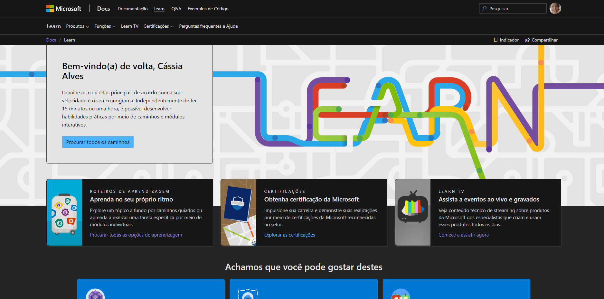
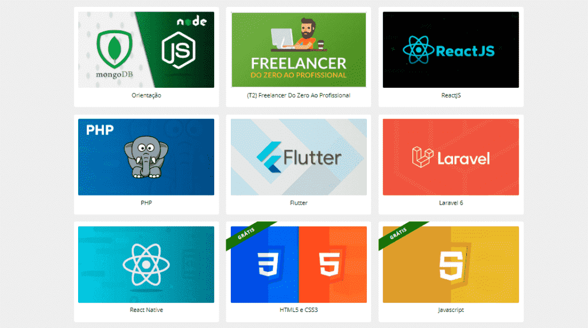

Aqui estão algumas plataformas de cursos que estudo:
MICROSOFT LEARN
Vários roteiros
Certificações
Azure, Cloud Computing, BI.

JDEV TREINAMENTO
Formação completa em java web
Full-Stack
Lógica - OO- Java básico e avançado...
B7W-Programação
PHP e Framework
Full-Stack
PHP, Node.js, Angular,Docker...

DIO
Bootcamp
Full-Stack
Diversos...